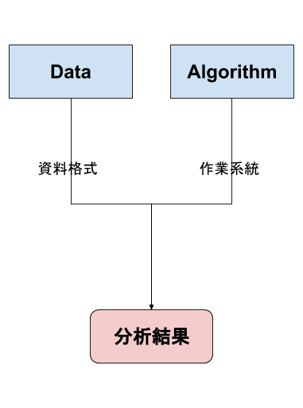
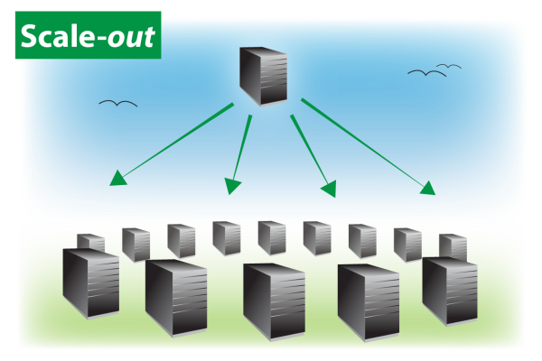

June 01, 2017
資料科學的Hello World
Dashboard的製作就是資料科學團隊的Hello World
檢驗資料的品質

檢驗科學家們對資料的理解
每導入一個資料源，就應該要製作對應的Dashboard
上游污染、下游受害
Dashboard能為資料科學團隊建立初步的信譽

R 語言的解決方案
- shiny
- flexdashboard
- Rmarkdown
- Batch Job
等實作時間再跟同學介紹
資料分析的目的是價值
資料部門在企業中是成本單位

老闆對資料團隊的期待…?

有時老闆已經知道團隊的任務

金融投資、避險

廣告推薦引擎
有時資料科學家要自己發想問題

Google用Machine Learning省電

貨運公司UPS發現不左轉比較省油
但是老闆不願意只看到……

方法的「創新」不重要，重要的是對公司帶來的影響
問題：對一個資料科學團隊，怎麼產生價值？
資料整合是新價值的捷徑
數據分析是個悠久的知識產業
- 玉山銀行的CRM部門已經十年……
- 工廠用資料做品管提升已經數十年……
單一資料可能已經被分析得透徹…
- 分析獲得的知識，要「新」才有意義
大數據時的不同

資料整合變成產生價值的捷徑

風速資料與機場起降資料整合 ==> 檢驗兩者的關係
資料整合變成產生價值的捷徑

房貸餘額與GDP的比較 ==> 房地產泡沫化指數
資料整合變成產生價值的捷徑
台灣出入境人數 v.s. 旅遊業GDP
資料整合變成產生價值的捷徑
資策會資安所把不同廠商的資安紀錄整合
==> 可以觀察與追蹤跨區駭客的足跡
故事來源：MLDM Monday | Cyber Security
資料整合的目的
更多的Covariates、Features、相關性…
- 風速資料與機場起降資料整合 ==> 檢驗兩者的關係
- 台灣出入境人數 v.s. 旅遊業GDP ==> 檢驗兩者的關係
- 資策會資安所整合資安紀錄 ==> 更完整駭客足跡
參考標準
- 房貸餘額與GDP的比較 ==> 房地產泡沫化指數
- 薪資成長與GDP的比較 ==> 經濟成長分配問題
- 業務成長與市場成長 ==> 了解公司在市場的消長
一般資料的整合
時間資料整合

相同欄位對應的意義不一定一樣
空間資料整合
空間資料的形式
- Grid
- Location
- Shape
空間資料的形式
Grid

空間資料的形式
Location
空間資料的形式
Shape
R 語言的解決方案
- dplyr 各種join
- 設計並建立「比對的
key」 - 控制時間的表現方式：時間(POSIXct) ==> 字串(character)
- 空間相關套件
等實作時間再跟同學介紹
具分析思維的資料處理
資料處理的要點
- 資料「科學」：如何讓其他人重現分析結果？
- 資料品質：如何在處理資料時能確保資料品質？
- 資料的一致性
可重現的分析
影響分析結果的要素
- 資料
- 演算法
- 隨機亂數

如何建構可重現的分析
- 建立資料的archive
- 將演算法的實作納入程式碼的版本控制
- 使用可設定seed的random number generator
- 紀錄initial point

範例
https://github.com/wush978/KDD2015wpp
- 資料：iPinYou Real-Time Bidding Dataset for Computational Advertising Research
- 演算法：github
- 作業系統套件與R語言套件：docker
- 隨機亂數：從0開始
資料品質
永遠都不修改既有的資料
- 我們會犯錯
- 不會限縮分析的範圍

分析上
- 獲取資料比分析資料貴
- 錯誤的更動原始資料 ==> 重新收集資料
- 事後追錯，可重現分析的情境
- 重現非常非常的重要，尤其是當你找到驚人的大發現

範例：社交服務的資料設計
情境：
- 使用者A跟隨了使用者B
- 使用者A取消跟隨了使用者B
作法
- 更新既有的資料
- 使用者B的「跟隨者」清單中，新增使用者A
- 使用者B的「跟隨者」清單中，移除使用者A
- 不更動既有的資料
- 紀錄使用者A跟隨使用者B的事件
- 紀錄使用者A取消跟隨使用者B的事件
範例：比較兩種做法的後果
| 問題 | 方法1 | 方法2 |
|---|---|---|
| 列出跟隨B的使用者 | 讀取使用者B的「跟隨者」清單 | 從事件中找出目前正在跟隨B的使用者 |
| 計算有多少人跟隨B | 計算使用者B的「跟隨者」清單的長度 | 從事件中計算目前正在跟隨B的使用者 |
| 列出兩年前跟隨B的使用者 | … | 從事件中找出兩年前正在跟隨B的使用者 |
- 更動資料，會讓我們無法追歷史
資料的一致性
資料的一致性
為了效能，業務用的資料源與分析用不同

解決方法
- 同時記錄NoSQL Database的State
- 分析時會一併考慮NoSQL Database的誤差
資料的一致性
為了效能，分析的資料源是Column Oriented Database

解決方法
釐清分析的目的
- EDA、找問題、找想法用Column Oriented Database
- 快、Iterative
- 建立服務用的模型、資料產品，用Raw Log當Input
共享資料ETL的功能
Using R Packages and education to scale Data Science at Airbnb

共享ETL帶來的好處
- 資料格式的一致
- 資料的一致
- 程式碼的一致
- 環境的一致、演算法的一致
使用R語言建構可擴充的資料科學工作環境
- 可重現的分析工作
- 工具鍊、文件
- 新演算法的推廣

實作區 - 快速建構 Dashboard
knitr
-
.Rmd，已經整合至Rstudio - 文件與程式碼的整合
- 動態產生文件
活用RMarkdown來呈現分析結果
- 文字結構：
#、##、###、…. - 程式碼：`x <- …` ==>
x <- ... - 畫圖：
\```{r chunk-title, chunk-options}
\```
-
knit…
knitr tricks
- setup chunk: 幫每個文件客製化knitr default options
- 每日報表->取消cache
- 研究為主->開啟cache
- 學術研究相關格式
- biblography:
@xxx搭配 .bib 的key:xxx {...} -
$...$inline math formula,$$...$$outline math formula- \(x_i \sim N(\mu, \sigma^2)\)
- biblography:
- Build –> Configure Build –> Makefile…(Ctrl+B 自動編譯)
Web Based Presentation
- Shiny ==> 互動網站
- knitr ==> rmarkdown ==> 靜態報表
- 透過htmlwidget技術發布的套件，可以同時用於Shiny與rmarkdown
flexdashboard
- 適合用於製作dashboard
範例：Power Analysis for DSP
每日定時執行R
- Windows: taskscheduleR
- Linux/Unix: cronR
- Jenkins/Crontab/Task Scheduler + Rscript + command line options(ex: optparse)
Data Join
操作時間
- 請完成 02-RDataEngineer-05-Data-Manipulation
- 請完成 02-RDataEngineer-06-Join
時間資料整合的討論
- 累積數據(GDP) v.s. 瞬間數據(房貸餘額)
- 2010年的GDP v.s. 2010-01的房貸餘額，合理嗎？
空間資料整合的範例
- Location <–> Shape
-
sp::overex: Simple EDA for Solar Farmland Analysis Part 2
-
- Location <–> Grid
sp::over- Kriging
- Grid <–> Shape
sp::over- Reduce Grid to Location